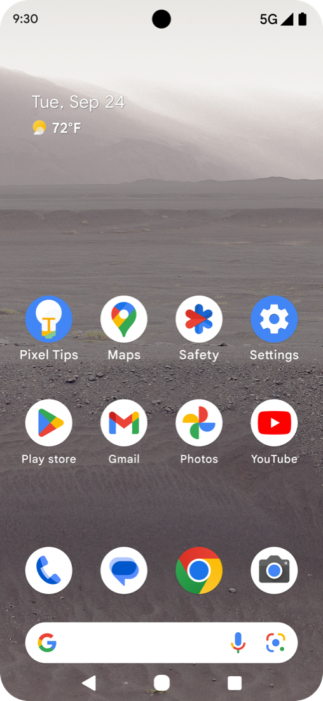
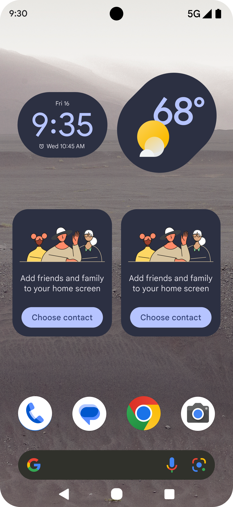

Google Pixel
Simple View
Up to 80% conversion at selected Japanese carrier points of sale, after Simple View moved out of the Accessibility menu and into the setup wizard.

01 / ChallengeThe Challenge
Pixel was selling well in Japan — except to older adults. The assumption: a simpler phone. The research said something else entirely.
02 / ResearchDiscovery & Research
Older adults in Japan weren't struggling with capability. They were struggling with confidence. Most attendees at the senior technology center were phone-literate. They used their phones regularly and well. What they wanted wasn't a simpler phone. They wanted reassurance. Sessions were full of "I did this — is that okay?" The answer was almost always yes. They just needed someone to confirm it.
One woman's story captured it. She loved the theater. She'd use her phone to browse what was playing, choose a show, map the route, make a restaurant reservation for after. But she wouldn't buy the tickets online. She'd walk to the local convenience store to do it in person. The phone wasn't the barrier. Trust in irreversible actions was. She didn't need a simpler phone. She needed a clearer one that didn't make her second-guess herself.
That reframed the brief. The goal wasn't to take the phone down. It was to make it legible, predictable, and safe at the moment of first use. And critically: older adults in Japan didn't think of themselves as disabled or in need of accommodation. They'd never seek out a setting labeled "Accessibility." Whatever I built had to feel like a mainstream choice, not a workaround.

03 / PositioningDesigning Against Stigma
The first version of Simple View lived inside the Accessibility menu. It was the obvious home, and it was wrong. The users who needed it most never found it. They didn't think of themselves as someone who needed accessibility features.
The naming created friction internally too. "Why Simple?" was a common reaction from dogfooders. The implication: calling something "simple" was condescending. That tension was real, and worth taking seriously. But it also confirmed what the research had shown. Any label that signaled "this is for people who struggle" was going to be avoided by the exact people we were designing for. The solution wasn't to rename Simple View. It was to reposition it: out of the workaround category, into the choice category.
The fix was to move Simple View into the main phone setup wizard. Present it as a standard option at the moment of first use, before any habits had formed and before the phone had established itself as something to navigate around. The setup wizard also let us pre-select a helpful set of home screen icons, reducing the blank-slate overwhelm of a new device from the very first screen.



Out of Accessibility settings, into the setup wizard. A standard choice, not a special accommodation.
04 / ImpactSolution & Impact
Simple View itself isn't complicated: a clean home screen with large icons and text, 3-button navigation, an enhanced keyboard. What made it work wasn't the feature. It was where it lived: in the setup wizard, alongside the standard experience, with no stigma attached and no settings menu to excavate.
At selected carrier retail locations outside Tokyo, conversion reached 80%. Store staff could hand a customer a phone in setup mode and let them choose Simple View themselves.


Same phone, two layouts. Simple View isn't a stripped-down phone — it's a legibility-first one.
Up to 80% Conversion Rate
At selected Japanese carrier points of sale, after Simple View moved from the Accessibility menu to the setup wizard.
"It made the phone look less cluttered and simpler to use."
User Feedback
05 / ForwardWhat I'd Take Forward
The most important design decision on this project wasn't visual. It was placement. Where a feature lives shapes who feels permitted to use it. Putting Simple View in Accessibility signaled that only certain kinds of people should consider it. Putting it in setup made it a preference, not a concession.
The principle applies well beyond this project. When you design for a group that doesn't identify with the label you've given them, the solution is rarely the feature itself. It's removing the friction of self-identification between the user and the thing that would help them.
This is the kind of design work I bring to consulting engagements. If you're working on a product where that gap exists, let's talk.